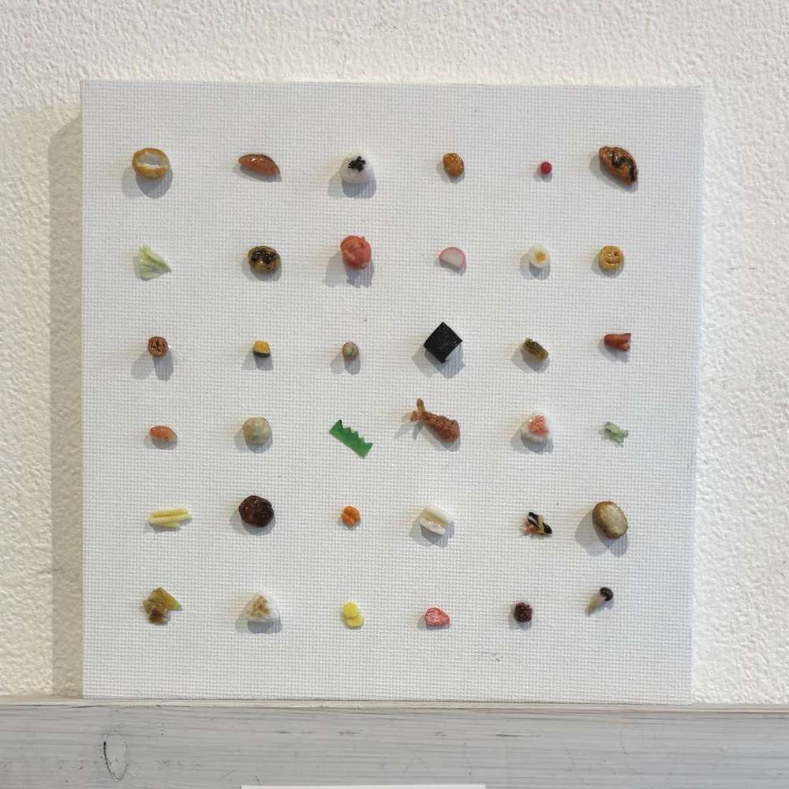
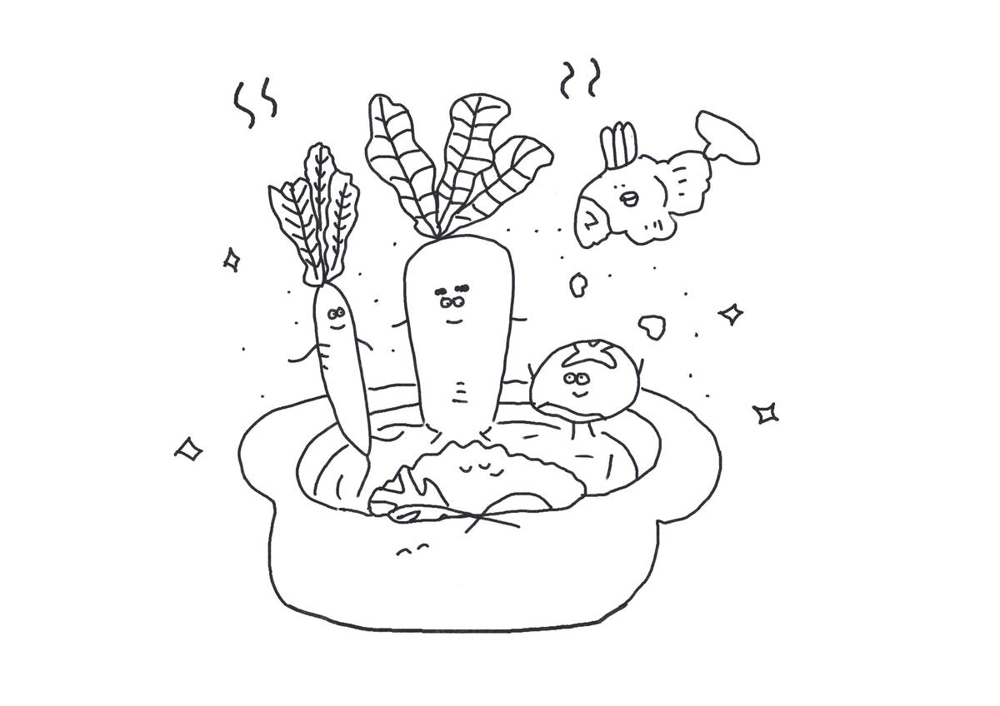
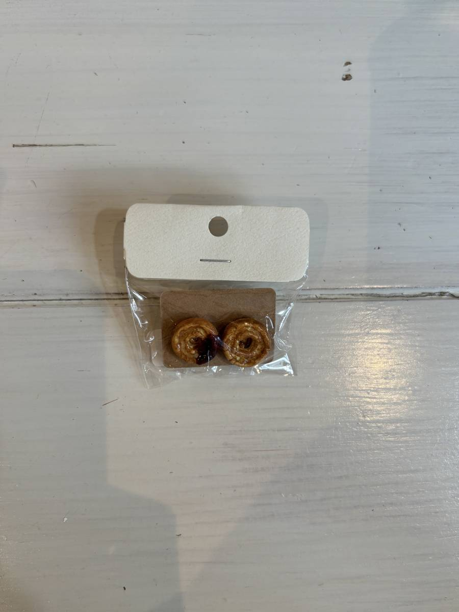

ミニチュアやイラストをはじめ、暮らしにそっと寄り添う作品を制作しています。 それぞれの制作についての詳しい紹介は下記をご覧ください。 作品そのものは Portfolio にまとめています。

ミニチュア制作歴10年。樹脂粘土を使って、本物みたいな指先サイズの ミニチュアフードを制作しています。

ゆるくて少し愛おしい、日常に寄り添うイラストを描いています。

ミニチュアやイラストを取り入れたアクセサリーや、レジン・ビーズを 使った、遊び心のある作品を制作しています。